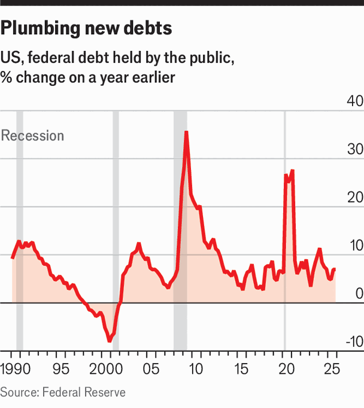

The special role of the Treasury market is in peril
Government debt, inflation and unpredictable policymaking are putting the world’s most important asset under threat, argues Mike Bird in a special report
June 4th 2026
IT IS THE nightmare scenario for any market: everyone rushes for the exits at the same time and trading seizes up. That kind of crunch was not thought to be possible in the most liquid market in the world. But in early 2020, as the covid-19 pandemic took hold and the global economy faltered, many companies, governments and individuals found themselves in need of immediate cash as their regular income dried up. The easiest asset to sell, precisely because of the supposed liquidity of the market, was American Treasury bonds.
Although Treasury prices usually rise in times of sudden stress in riskier markets, they instead began to slump, with few buyers on the other side of the wave of selling. Big banks, usually the biggest dealers in Treasury bonds, were feeling the pinch themselves, and so did not step in to facilitate the “dash for cash”. Suddenly, an investment considered to be the ultimate safe asset, against which many of the world’s other financial assets are priced, was becoming hard to sell. To stop the market from freezing up completely, the Federal Reserve had to start buying, eventually acquiring trillions of dollars in American government debt.
The episode was the opposite of what Alexander Hamilton had in mind in 1790 when, as America’s first Secretary of the Treasury, he convinced sceptical colleagues that the federal government should take on the war debts of the new country’s 13 states. The United States duly issued open-ended securities that paid 6% a year in interest—the first true Treasury bonds.
At the time, British government bonds were the world’s most easily traded financial asset, and Hamilton looked at London’s debt market with envy. Public debt, he felt, had to be secure and transferable. Such a market, he argued, attracts investors, and so reduces interest rates for everyone, not just the government. In modern terms, Hamilton dreamed of liquidity.
A market is liquid when an investor can buy or sell an asset whenever they want, safely and cheaply, with full knowledge of prevailing prices. In normal times no market on Earth promises more liquidity than the one for securities issued by the US Treasury. It is a near-$32trn colossus—vastly bigger than any other market for sovereign debt. The bonds are not just America’s safe asset, but the world’s. Discussions of how to price risk begin by comparison with the Treasury market. It is the lodestar of the global financial system.

Given its exalted status, it is striking how fast the Treasury market is changing. Over the past three years, the value of Treasuries outstanding has grown by 8% a year on average (see chart). Two decades ago America accounted for 38% of the government debt of the G7, a club of the world’s biggest rich economies. Now it accounts for 60%. In less than ten years the Treasury market is projected to grow to $50trn, over 60% bigger than today.
As the market has ballooned, the participants have changed, too. The most dependable investors—banks buying to satisfy regulatory requirements, foreign central banks building warchests for currency crises, or the Federal Reserve itself—own less than a third of Treasuries, the lowest share in 30 years. They have been supplanted by buyers seeking returns rather than security. Hedge funds borrow against Treasury bonds to turn tiny opportunities for arbitrage into bigger gains. Insurers and pension funds are also big buyers, but their appetite depends on yields elsewhere, fluctuating exchange rates and the cost of currency hedges.
The return of inflation in recent years, meanwhile, has dimmed the appeal of Treasuries for investors who want protection from stockmarket sell-offs. Since 2021 the prices of stocks and bonds have often fallen at the same time, driven by fears of rising interest rates. It happened again this year. Between the start of America’s strikes on Iran and March 30th, the S&P 500 dropped by 8%, while yields on ten-year bonds rose from 4% to 4.3% (bond yields rise as their prices fall).
It is not just rising rates, however, that are undermining Treasuries’ status as a safe haven; it is also policy-making caprice. Last year yields again rose as stocks declined when Donald Trump imposed swingeing tariffs on American allies and foes alike. Some foreign investors worry that one day, a similarly pugnacious administration might tax or otherwise meddle with their Treasury holdings. The theatrical dramas surrounding congressional budget negotiations, in which one or other of the two big parties regularly threatens to force an unnecessary default, reinforce such concerns. So does the slow deterioration of America’s credit rating: last year Moody’s demoted the federal government from triple-A, its highest rank. The firm’s big rivals had already done so.
America’s regulators, still a capable lot, have not been blind to the risks. They have opened permanent channels to allow banks and foreign central banks to borrow against the value of their Treasuries, boosting liquidity. Soon, much of the trading in Treasuries and borrowing against them will be conducted through a central clearing house, reducing the risk of sudden blow-ups. But like cartoon characters rapidly laying new railway tracks to keep a speeding train on course, regulators are making these rules as the market grows and changes. How well the rules work will become clear only during the next period of immense stress.
And stress is becoming more common. There have been several worrying episodes in recent years, in addition to the dash for cash. In September 2019 and in March 2023 the Federal Reserve intervened in funding markets to restore liquidity. Each of the individual changes affecting the market—the rapidly mounting debt, the resurgent inflation, the quixotic policymaking, the intermittent seizures—is a concern for global investors. Taken together, they are cause for alarm.
The risk is not so much, or not chiefly, that America might default on its debt. Rather, this special report will argue, the fear is that the Treasury market might gradually forfeit its status as the guiding light of global finance. That would make it more expensive for America’s government to borrow. And since there is no good alternative to Treasuries, it would make the entire global financial system wobblier and riskier. ■